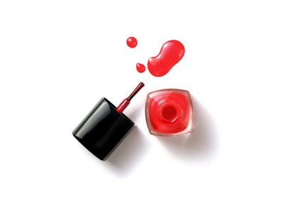
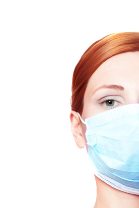
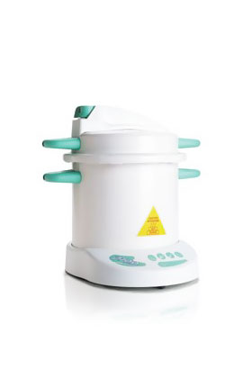
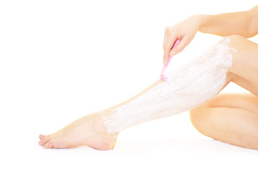
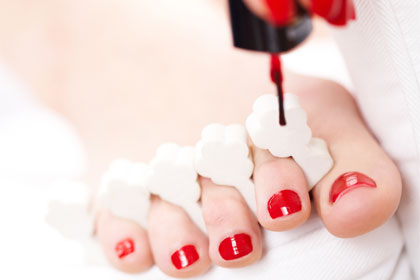
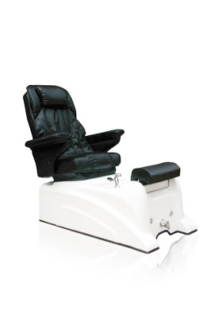
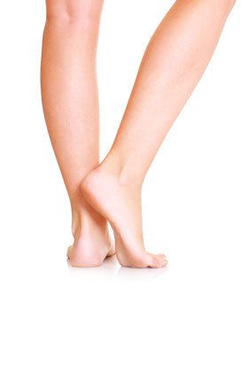
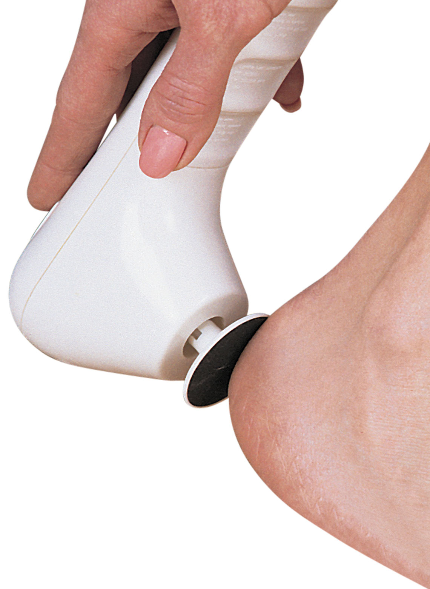

-
You are always at risk
Podiatrist Dr. Robert Spalding, author of "Death by Pedicure," states that "at this time, an estimated one million
unsuspecting clients walk out of their chosen salon with infections -- bacterial, viral and fungal." And no matter which salon
you go to, there is always a risk of infection. He claims that in his research "75 percent of salons in the United States are
not following their own state protocols for disinfections," which includes not mixing their disinfectant solutions properly on a
daily basis, not soaking their instruments appropriately, and using counterfeit products to reduce costs (for example Windex
substituted for Barbicide), says the doctor. And the problem is that there is no way to really "verify an instrument has been
properly soaked and sterilized," without watching the process.
They don't turn customers away
Like most businesses, most nail salons won't turn away paying costumers. Which means that people who are sick, have nail
infections or foot fungus are being worked on next to you instead of being referred to an appropriate medical professional.
Dr. Spalding says that the greatest danger of the nail salon is "The transmission of infection from one client to another." And
with "millions of people whose immune systems are compromised by diabetes, HIV, cancer, hepatitis and other infective organisms"
booking services offered in nail salons, many are dangerously susceptible to infection, warns the doctor.
They swap and dilute bottles
In her long history as a nail technician, celebrity manicurist Jin Soon Choi, owner of Jin Soon Natural Hand and Foot Spas in
New York City, says she has heard of many salons filling expensive lotion bottles with a cheap generic lotion. That way the
salons can charge you more for the manicure by claiming to use prestige products, but in reality are just deceiving you.
Similarly, she says that some salons will dilute nail polish bottles that have become clumpy from old age or from too much
air exposure with nail polish remover. This action compromises the quality of the polish, which will make the formula chip
easier once on your nails. To ensure the life of your color and to protect any possible germ spreading, tote your own bottles.
Just because there is no blood, doesn't mean you haven't been cut.
"Breaks in the skin can be microscopic or highly visible," says Dr. Spalding. They can either come in with the client via "cuts,
scratches, hangnails, bitten nails, insect bites, paper cuts, split cuticles -- or be created in the salon," he says. "Nail
techs using callus-cutting tools and nail nippers, files, cuticle pushers, and electric burrs and drills, can and do scratch and
nick skin," sometimes drawing blood and sometimes not. But just because no blood is visible, doesn't mean these "portals of
entry" aren't susceptible to infective organisms, the doctor advises.
If you've ever had your nails filed and it momentarily feels "too hot in the corner for even a second," then you've had the
surface layer of your skin broken -- leaving it open for infection.
-
All costs are not included
Some salons will try to keep certain added costs a secret, says Choi. They try and up charge you for "nail
strengtheners or base coats" and won't tell you until it's time to check out, she says. A quality nail salon will include all
costs in the advertised price of the service, says Choi. So make sure to ask if all costs are included before soaking your hands
or feet.
 They aren't talking about you
They aren't talking about you
Some narcissists or paranoid customers might think that nail technicians are talking about them when they speak to each other
in other languages across the room, but they aren't. Apparently they don't care to share with each other how lovely your nail
beds are or how gross your big toe is. "In general, they mostly gossip about their family and friends and the shows they watched last night," says Choi.
Not all disinfecting solutions are 100 percent
effective
"Some infective microorganisms are easy to kill [and] some are not," says the doctor. And unfortunately, he has seen
"industry-wide confusion about the definition of the term 'sterilize.'"
He says many nail techs think their instruments are sterilized, when, in fact, they "have no clue," because not all
disinfectant solutions are powerful enough to kill all viruses. Therefore, when nail techs aren't informed of costumers' pre-
existing medical conditions, they don't know how to properly disinfect for particular viruses. "These are medical situations,"
says the doctor, which manicure and pedicure-licensed technicians aren't trained for -- it's not in their job description and
isn't their fault as they are "neither schooled nor licensed to work in the presence of blood or to maintain a surgically
sterile environment," says the doctor.
An autoclave is the only safe bet for sterilization
Many salons use Barbicide, UV light "sterilizer" boxes, or other chemical solutions to disinfect their tools, which is legal
and standard, but not totally effective at killing all bacteria and infection. The only solution that works completely is an
autoclave, a machine used to sterilize equipment and supplies using high pressure and steam, "which kills 100 percent of all
infective organisms," says Dr. Spalding. But currently, only two states (Texas and Iowa) require autoclaves in nail salons by
law, which means that "less than one percent of salons" use them regularly, he warns.
How can you find out if your salon is using an autoclave so
that you're a 100 percent protected?
First, ask the salon manager how they disinfect their tools and then look for the "color change pouches that the instruments
are prepared in," says the doctor. The color changes on the bag once correct sterilization conditions have been met. This color
change indicates that the object inside the package has been processed. Autoclave pouches are therefore sealed and should be
opened in front of you.
-
When you shave matters
You shouldn't shave before getting a pedicure, says Choi, as pedicurists do not care if you have hair on your legs.
Also, shaving your legs makes you more prone to infection as newly shaved legs have open pores (and often tiny nicks you can't
see) that are susceptible to infectious diseases. So don't be wary of showing off some stubble at the salon, she says.
Some tools can't be sanitized
You can only put metal tools in the autoclave, says Choi. And as we stated before, only an autoclave kills a 100 percent of
all bacteria and viruses. Nail salon tools like pumice stones, emery boards, nail buffers and foam toe separators need to be
swapped out after each use to prevent the spread of bacteria. That's why you're best off bringing your own -- just in case the
salon doesn't follow this practice. If you see any white residue on a nail file, it means it's been used on someone else.
Footbaths aren't your friend
"Whirlpool footbaths," though seemingly safe, are filled with city water, which may or may not be free of microbes, says the
doctor and are typically difficult to clean. Even though most nail salons disinfect their tubs, researchers for the Centers for
Disease Control and Prevention typically find bacteria that could cause boils and rashes in most according to the "New York
Times." And it's extremely hard to bust these salons with having microbe growth, as many times salons aren't linked to the
infections because boils can take as long as four months after a pedicure to develop.
You don't need your calluses removed
Many salons will try and talk you into callous removal, as it is usually an additional service and charge. But Skyy Hadley,
celebrity manicurist and owner of the As "U" Wish Nail Spa, says it is not always necessary. "If you're an athlete then you
should never remove your calluses as these actually help level your performance. If you are not an athlete, you should have your
calluses removed with a deep soak and scrub once they become thick and uncomfortable," she says.
If you do opt for callous removal, always choose scrubbing or a chemical remover. Never allow your nail technician to cut or
shave the skin off your feet. "Cutting is cutting," and "not recommended," says Choi. Not to mention, the more you cut, the
thicker the calluses will grow back, she advises.